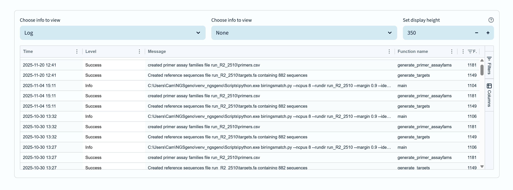

The NGSG Explorer Activity Log and Viewer
Activity log
At the bottom of every page is an information panel displaying the activity log.

This is a crucial tool for tracking all actions taken within the experiment. It is possible to change the
view from the log panel to another information panel type, and you can have a second panel visible too.
By default only the log is shown here to provide sufficient horizontal screen space.
The columns in the log display are (from left to right): Time, Level, Message, Function name, Func line.
- Time - the time and date the log entry was created
- Level - the severity level of the log entry (e.g. info, warning, error)
- Message - a descriptive message about the log entry
- Function name - the name of the function where the log entry was generated
- Func line - the programming line number in the function where the log entry was generated
There is more information retained in each log entry than is displayed - this is mostly useful in finding and fixing any issues that arise.
Message levels are used to indicate the severity of an issue.
- Info - informational messages providing general updates on events
- Success - indicates successful completion of an action or stage
- Failure - indicates a failed action or stage. These are not typically problematic
- Warning - indicates a potential issue that may not stop the pipeline from running, such as insufficient primer volumes, but should be considered
- Error - indicates an issue that will prevent the pipeline from running, such as missing files or incorrect file formats
- Critical - indicates a severe issue that requires immediate attention, such as system failures or data corruption.
These indicate that the pipeline is in an inconsistent state or has encountered a programming error. You should raise any critical issues immediately.
- Debug - detailed information for debugging purposes - unlikely to be seen in regular use
To aid users in spotting important issues, warnings are displayed in yellow, errors are displayed in red,
and critical messages are in purple.
You cannot remove or clear log entries.
Back to index